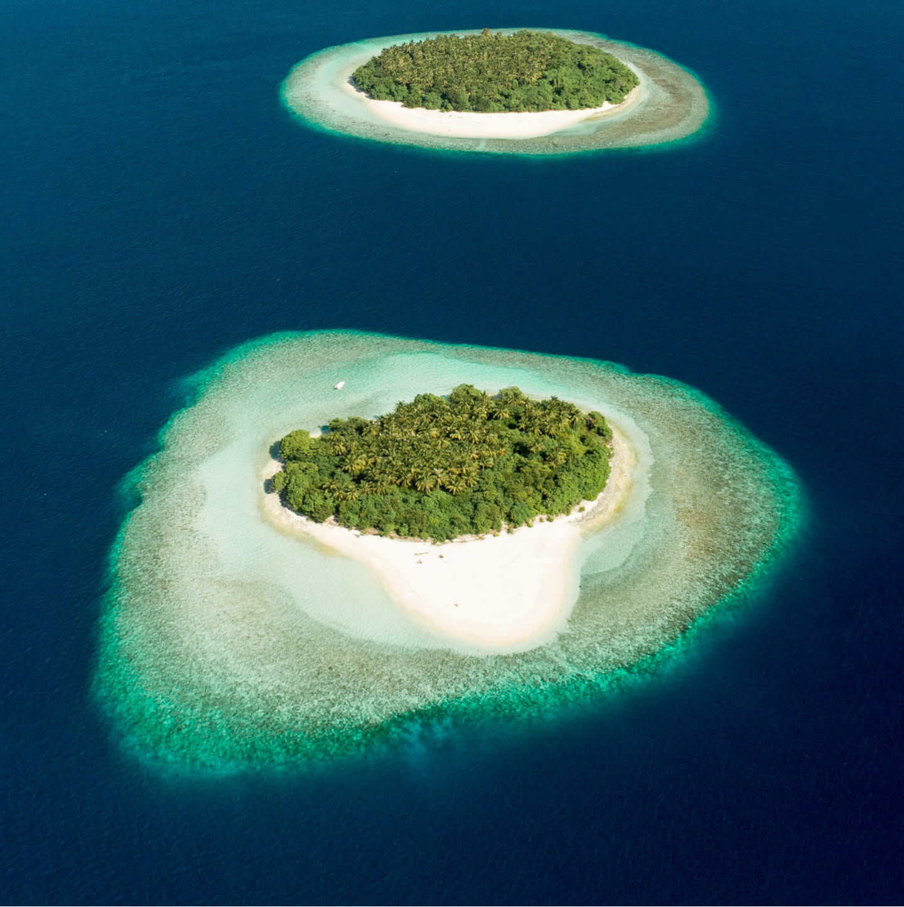
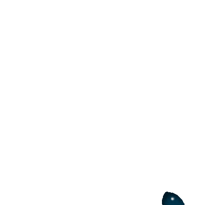

1%
of global
BLUER, GREENER, BETTER.
How small island developing states are leading climate action.
Tuvalu Foreign Minister Simon Kofe delivered a stark message at the 2021 UN Climate Change Conference (COP26).
And he did it in a (not-so) symbolic way standing knee-deep in sea water. According to NASA, sea level has risen 10 cm in the last 29 years.
But let's get out of the water for a moment.
BLUER, GREENER, BETTER.
How small island developing states are leading climate action.

we
are
sinking
are
sinking
Tuvalu Foreign Minister Simon Kofe delivered a stark message at the 2021 UN Climate Change Conference (COP26).
And he did it in a (not-so) symbolic way standing knee-deep in sea water. According to NASA, sea level has risen 10 cm in the last 29 years.
But let's get out of the water for a moment.

Small big challenges
The case of Tuvalu is not unique: all Small Island Developing States (SIDS) face the same environmental, social and economic vulnerabilities.
Often geographically remote and with small land areas, they tend to rely heavily on imports for food and energy. Their main economic activity commonly centers on tourism, leaving little flexibility to adapt to crises such as the COVID-19 pandemic.
And while just a few SIDS are considered least developed countries (LDCs) and most are classified as middle-income countries, when a climate disaster strikes (it happens more intensely in SIDS than in other continental countries, as the IPCC recently warned) response resources can be scarce due to reduced access to favourable financing conditions available to LDCs.
Small island developing states don't have the luxury of time.
They are on the frontlines of climate change, feeling the impacts first and most severely, but contribute less than 1 percent of global carbon emissions.
Ali Shafeeq, a Local Council Member in Dharavandhoo, Maldives, is not a stranger when it comes to climate change impacts: “The groundwater quality is now so bad I don’t even risk my children brushing their teeth with it. We use store bought water.”
In 2017, when hurricane Irma devastated Antigua and Barbuda, located in the so-called "hurricane belt", it destroyed 95 percent of homes and left a third of the country uninhabitable. As temperatures continue to rise, it’s expected hurricanes will become more frequent and more destructive in the years ahead.
Arbi Rubon, born and raised in Ebon in the Republic of the Marshall Islands, explains that her community knew when to prepare for harvest when the Lukweej (Calophyllum inophyllum) flower bloomed, but due to irregular rains and rising air temperatures, the tree no longer blossoms in season.
Climate change affects us all, but it does not affect us all equally. SIDS bear the brunt, but we are all in the same boat. According to the World Meteorological Organization, critical global indicators of the climate crisis broke records in 2021.


SIDS are on the frontlines of the climate crisis. But they are also at the forefront of climate solutions.
Small big opportunities


Small big opportunities
Yes, SIDS are on the frontlines of the climate crisis. But they are also at the forefront of climate solutions.
Many SIDS have made strong political commitments to net-zero carbon emissions and a climate-resilient future, including through updated and ambitious national climate action plans known as nationally determined contributions (NDCs). In fact, some are among the first countries in the world to officially do so:
-
 By 2030, Barbados will enact policies seeking to be the first 100% green and fossil fuel-free island state in the world.
By 2030, Barbados will enact policies seeking to be the first 100% green and fossil fuel-free island state in the world. -
Antigua and Barbuda aims to train 100% of the affected workforce to use new mitigation technologies for a low greenhouse gas emissions transition by 2030.
-
Suriname is committed to achieve 100% renewable energy by 2030 and 100% energy access by 2050
From promises to
actions
Some SIDS have already sprung into action. In Samoa, we’re bringing end-to-end circular solutions for plastic waste, focusing on the collection, upcycling and repurposing of plastic waste into building products.
Cuba has a particularly high proportion of coastline and, as a consequence, much of its population is vulnerable to threats related to climate change. Mangroves, which cover 70 percent of the coast, play a key role in this context, providing natural barriers to reduce the effects of winds and waves during storms and high tides.
“Six years ago, the mangrove didn’t grow past one metre high,” says María Teresa. Now, a community-driven restoration initiative embodies the best of ecosystem-based adaptation and 213,400 ha of mangrove and forests have been replanted since 2008. “Here you can breathe a healthy world” remarks María.
The island of Ndzouani, in the Comoros, was known for its surface water potential and its agricultural dynamism. It has now lost more than half of its rivers due to a combination of deforestation and climate change. By 2090, it’s estimated the island will see a reduction in rainfall of up to 47 percent during the dry season. The "One Comorian, One Tree" campaign aims to plant 613,000 new trees on 571 hectares of land across the country that will improve access to water and protect vulnerable ecosystems.


Consider this:
97 percent of the Earth's water is in the ocean.
97 percent of the Earth's water is in the ocean.
The ocean has tremendous potential – it’s one of the largest carbon reservoirs on Earth, holding about 50 times more carbon than the atmosphere, and it contributes 150 million jobs to the global economy.
Yet, the ocean has absorbed about 30 percent of all CO2 emissions produced by humans. As a result, the ocean has warmed causing sea level to rise.
And when the water gets too warm, ecosystems suffer, such as coral reefs, which release their colourful microalgae and turn a skeletal white. More than 90 percent could perish by 2050.
The ocean is a vital buffer against the impacts of climate change – saving our ocean means protecting our future.
97%
of earth water is in the ocean
Consider this:
97 percent of the Earth's water is in the ocean.
97 percent of the Earth's water is in the ocean.
The ocean has tremendous potential – it’s one of the largest carbon reservoirs on Earth, holding about 50 times more carbon than the atmosphere, and it contributes 150 million jobs to the global economy.
Yet, the ocean has absorbed about 30 percent of all CO2 emissions produced by humans. As a result, the ocean has warmed causing sea level to rise.
And when the water gets too warm, ecosystems suffer, such as coral reefs, which release their colourful microalgae and turn a skeletal white. More than 90 percent could perish by 2050.
The ocean is a vital buffer against the impacts of climate change – saving our ocean means protecting our future.
Blue can also be green

Blue can also be green
The ocean is also critical for sustainable development globally, and particularly for SIDS. It provides a wide array of social and economic benefits, while also being tightly linked to island cultures.
SIDS are capitalizing on this environment to diversify their economies, build resilience to shocks and sustain millions of livelihoods while preserving and restoring marine and coastal ecosystems, protecting cultural heritage and safeguarding against biodiversity loss.
Unlocking the blue economy can assist SIDS in achieving not only Sustainable Development Goal (SDG) 14 on life below water, but also SDGs on poverty, hunger, gender equality, economic growth and decent work, climate and others.
Seychelles is proving that blue can also be green. And better. Through a protected zone which will cover 30 percent of the country's ocean territory (the size of Germany), it reveals that conservation can go hand-in-hand with sustainable economic development.
In the Western and Central Pacific Ocean, 14 SIDS have worked conjointly to create the world’s first 100 percent sustainable tuna fishery, generating some US$500 million per year in revenue and creating 10,000 new jobs.
The Republic of Mauritius has already put it into practice: through Ecofish, they’re improving and strengthening the economic, social and environmental sustainability of the artisanal fisher community.

Sustainable development in SIDS is a complex endeavor, but if its potential is fully harnessed, challenges can be turned into big opportunities for the entire world.
The big fish…
…no longer in a small pond

Rising up for SIDS
Sustainable development in SIDS is a complex endeavor, but if its potential is fully harnessed, challenges can be turned into big opportunities for the entire world. As the Tuvalu Foreign Minister said at COP26, SIDS today provide a glimpse into the future for all of us.
“We are sinking,” he said. “But so is everyone else. And no matter if we feel the impacts today like in Tuvalu or in 100 years, we’ll all still feel the dire effects of this global crisis.”
Against this background, Rising Up for SIDS, UNDP’s integrated SIDS offer, aims to respond to their most pressing needs, building resilience through climate action, boosting the blue economy and accelerating digital transformation.
SIDS have proven themselves frontrunners in many aspects. It's everyone's job to keep them above water.